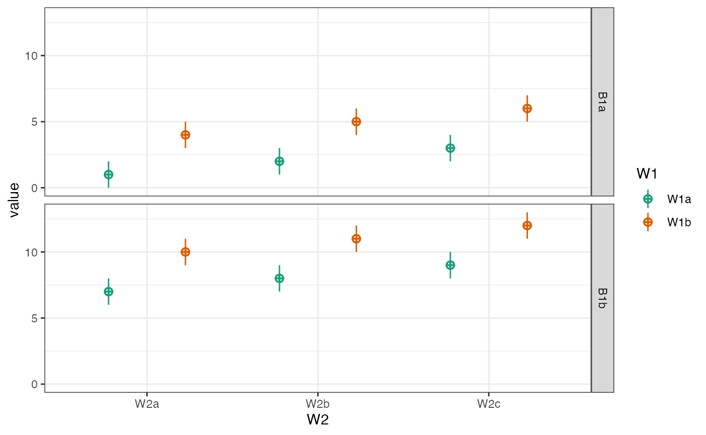
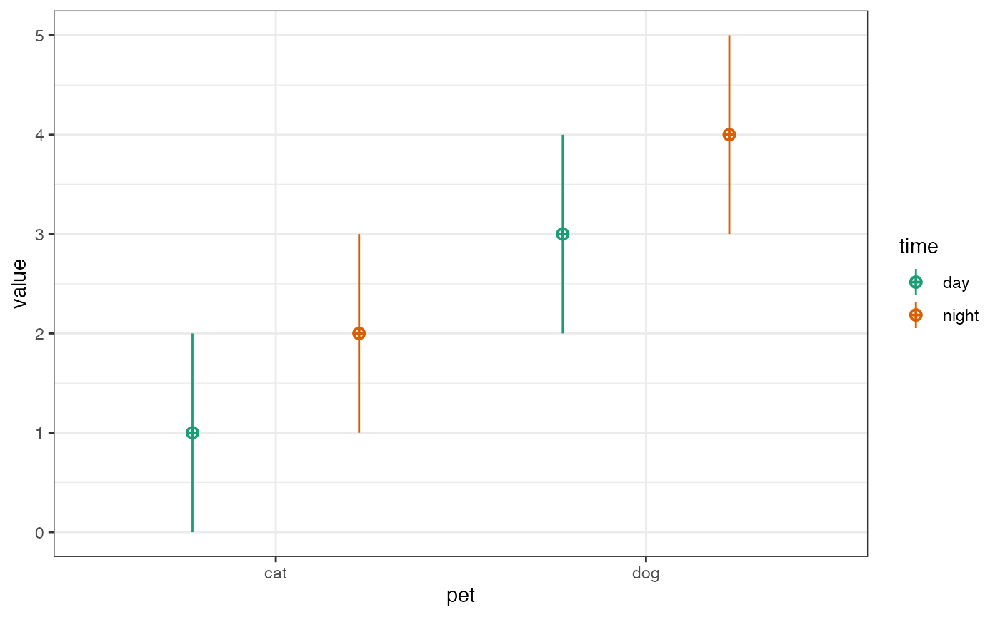
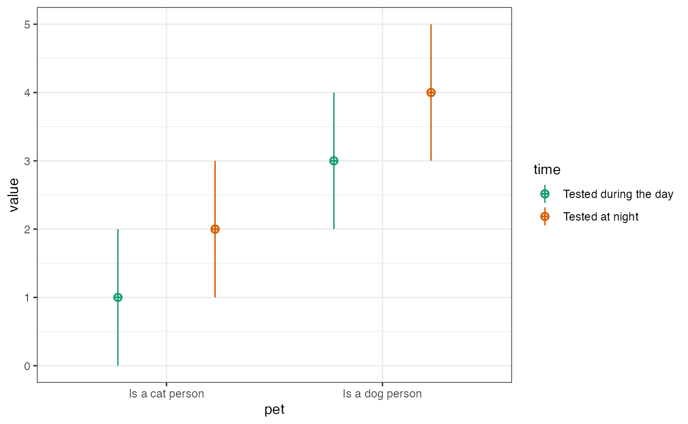
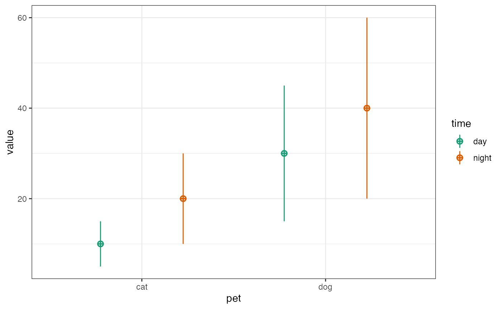

The sim_design() function creates a dataset with a specific between- and within-subjects design.
Quick example
For example, the following creates a 2w*2b design with 100 observations in each cell. The between-subject factor is pet with two levels (cat and dog). The within-subject factor is time with two levels (day and night).
The data is sampled from a population where the mean for the cat_day cell is 10, the mean for the cat_night cell is 20, the mean for the dog_day cell is 15, and the mean for the dog_night cell is 25. All cells have a SD of 5 and all within-subject cells are correlated r = 0.5.
between <- list(pet = c(cat = "Cat Owners",
dog = "Dog Owners"))
within <- list(time = c("morning", "noon", "evening", "night"))
mu <- data.frame(
cat = c(10, 12, 14, 16),
dog = c(10, 15, 20, 25),
row.names = within$time
)
df <- sim_design(within, between,
n = 100, mu = mu, sd = 5, r = .5,
empirical = TRUE, plot = TRUE)
Specification of design parameters
Factor and level names
Anonymous
If you don’t feel like naming your factors and levels, you can just put in a vector of levels. So you can make a quick 2w*3w*2b with the following code.
df <- sim_design(within = c(2,3), between = c(2),
n = 10, mu = 1:12, sd = 1, r = 0.5)
List of vectors
You can specify between-subject and within-subject factors as a list of vectors where the item names are the factor labels and the vectors are the level labels.
between <- list(
pet = c("cat", "dog")
)
within <- list(
time = c("day", "night")
)
df <- sim_design(within, between, mu = 1:4)
Levels with underscores
In wide format, faux uses an underscore to separate level names. Therefore, any underscores in factor level names will generate an error.
# with default sep = _
within <- list(
A = c("A_1", "A_2"),
B = c("B_1", "B_2")
)
sim_design(within, n = 5, plot = FALSE)
#> Error in check_design(within = within, between = between, n = n, mu = mu, : These level names have the separator '_' in them: A_1, A_2, B_1, B_2
#> Please change the names (see fix_name_labels) or choose another separator character using the sep argument or faux_options(sep = '~')
#> safe separators for your factor labels are: _You can change this default with faux_options().
faux_options(sep = ".")
sim_design(within, n = 5, plot = FALSE)
#> id A_1.B_1 A_1.B_2 A_2.B_1 A_2.B_2
#> 1 S1 0.26758568 -1.0427328 -0.76117907 -1.4205876
#> 2 S2 -1.26342118 -0.6933384 -0.27144145 -0.3073318
#> 3 S3 -1.05053275 0.9666903 1.63505565 0.6926959
#> 4 S4 0.65104622 0.2780749 0.77626277 -0.9197527
#> 5 S5 0.01020941 -0.1250620 -0.04939468 0.4310845
# put the separator back to _ for the rest of this vignette
faux_options(sep = "_")List of named vectors/lists
You can also specify factors as a list of named vectors or lists where the item names are the factor labels, the vector names are the level labels that are used in the data table, and the vector items are the long labels for a codebook or plot.
between <- list(
pet = c(cat = "Is a cat person", dog = "Is a dog person")
)
within <- list(
time = c(day = "Tested during the day", night = "Tested at night")
)
df <- sim_design(within, between, mu = 1:4)
check_design
The check_design() function converts this to the fully expanded version; it checks your design specification when you run sim_design() or you can run it on its own to create a validated design list. You can view this in JSON format using the function json_design().
design <- check_design(within, between, n = 10,
mu = 1:4, sd = 1:4, r = 0.5, plot = FALSE)
json_design(design, pretty = TRUE)
#> {
#> "within": {
#> "time": {
#> "day": "Tested during the day",
#> "night": "Tested at night"
#> }
#> },
#> "between": {
#> "pet": {
#> "cat": "Is a cat person",
#> "dog": "Is a dog person"
#> }
#> },
#> "dv": {
#> "y": "value"
#> },
#> "id": {
#> "id": "id"
#> },
#> "n": {
#> "cat": 10,
#> "dog": 10
#> },
#> "mu": {
#> "cat": {
#> "day": 1,
#> "night": 2
#> },
#> "dog": {
#> "day": 3,
#> "night": 4
#> }
#> },
#> "sd": {
#> "cat": {
#> "day": 1,
#> "night": 2
#> },
#> "dog": {
#> "day": 3,
#> "night": 4
#> }
#> },
#> "r": {
#> "cat": [
#> [1, 0.5],
#> [0.5, 1]
#> ],
#> "dog": [
#> [1, 0.5],
#> [0.5, 1]
#> ]
#> },
#> "sep": "_"
#> }Specifying N
You can specify the Ns for each between-subject cell as a single number, named list, or data frame.
Single number
You usually want to specify n as a single number. This is N per cell, not total sample size.
n <- 20 # n per cell, not total
design <- check_design(2, c(2,2), n = n, plot = FALSE)
str(design$n)
#> List of 4
#> $ B1_C1: num 20
#> $ B1_C2: num 20
#> $ B2_C1: num 20
#> $ B2_C2: num 20Named list
You can also specify n as a named list of Ns per between-subject cell.
n <- list(
B1_C1 = 10,
B1_C2 = 20,
B2_C1 = 30,
B2_C2 = 40
)
design <- check_design(2, c(2,2), n = n, plot = FALSE)
str(design$n)
#> List of 4
#> $ B1_C1: num 10
#> $ B1_C2: num 20
#> $ B2_C1: num 30
#> $ B2_C2: num 40Dataframe
Or as a data frame. You just need to get the row or column names right, but they don’t have to be in the right order.
n <- data.frame(
B2_C2 = 40,
B1_C1 = 10,
B1_C2 = 20,
B2_C1 = 30
)
design <- check_design(2, c(2,2), n = n, plot = FALSE)
str(design$n)
#> List of 4
#> $ B1_C1: num 10
#> $ B1_C2: num 20
#> $ B2_C1: num 30
#> $ B2_C2: num 40You can specify the cells as row names or column names and check_design() will fix them. Since n has to be the same for each within-subject factor, you can specify n as a single column with any name.
n <- data.frame(n = c(10, 20, 30, 40),
row.names = c("B1_C1", "B1_C2", "B2_C1", "B2_C2"))
design <- check_design(2, c(2,2), n = n, plot = FALSE)
str(design$n)
#> List of 4
#> $ B1_C1: num 10
#> $ B1_C2: num 20
#> $ B2_C1: num 30
#> $ B2_C2: num 40Mu and SD
The specifications for mu and sd need both within-subect and between-subject cells. You can specify these as a single numbers, a vector, a named list of named vectors or a data frame.
Unnamed vector
An unnamed vector is a quick way to specify means and SDs, but the order relative to your between- and within-subject cells can be confusing.
between <- list(pet = c("cat", "dog"),
condition = c("A", "B"))
within <- list(time = c("day", "night"))
mu <- c(10, 20, 30, 40, 50, 60, 70, 80)
design <- check_design(within, between, mu = mu, plot = FALSE)
str(design$mu)
#> List of 4
#> $ cat_A:List of 2
#> ..$ day : num 10
#> ..$ night: num 20
#> $ cat_B:List of 2
#> ..$ day : num 30
#> ..$ night: num 40
#> $ dog_A:List of 2
#> ..$ day : num 50
#> ..$ night: num 60
#> $ dog_B:List of 2
#> ..$ day : num 70
#> ..$ night: num 80Named list of named vectors
A named list of named vectors prevents confusion due to order. The levels of the between-subject factors are the list names and the levels of the within-subject factors are the vector names, but their order doesn’t matter.
mu <- list(
cat_B = c(night = 40, day = 30),
cat_A = c(day = 10, night = 20),
dog_A = c(day = 50, night = 60),
dog_B = c(day = 70, night = 80)
)
design <- check_design(within, between, mu = mu, sd = 1, plot = FALSE)
str(design$mu)
#> List of 4
#> $ cat_A:List of 2
#> ..$ day : num 10
#> ..$ night: num 20
#> $ cat_B:List of 2
#> ..$ day : num 30
#> ..$ night: num 40
#> $ dog_A:List of 2
#> ..$ day : num 50
#> ..$ night: num 60
#> $ dog_B:List of 2
#> ..$ day : num 70
#> ..$ night: num 80Alternatively, you can specify them as data frames.
mu <- data.frame(
cat_A = c(10, 20),
cat_B = c(30, 40),
dog_A = c(50, 60),
dog_B = c(70, 80),
row.names = c("day", "night")
)
design <- check_design(within, between, mu = mu, plot = FALSE)
str(design$mu)
#> List of 4
#> $ cat_A:List of 2
#> ..$ day : num 10
#> ..$ night: num 20
#> $ cat_B:List of 2
#> ..$ day : num 30
#> ..$ night: num 40
#> $ dog_A:List of 2
#> ..$ day : num 50
#> ..$ night: num 60
#> $ dog_B:List of 2
#> ..$ day : num 70
#> ..$ night: num 80If you transpose the dataframe, this works out fine unless your within- and between-subject cells have identical names.
mu <- data.frame(
day = c(10, 30, 50, 70),
night = c(20, 40, 60, 80),
row.names = c("cat_A", "cat_B", "dog_A", "dog_B")
)
design <- check_design(within, between, mu = mu, plot = FALSE)
str(design$mu)
#> List of 4
#> $ cat_A:List of 2
#> ..$ day : num 10
#> ..$ night: num 20
#> $ cat_B:List of 2
#> ..$ day : num 30
#> ..$ night: num 40
#> $ dog_A:List of 2
#> ..$ day : num 50
#> ..$ night: num 60
#> $ dog_B:List of 2
#> ..$ day : num 70
#> ..$ night: num 80Correlations
If you have any within-subject factors, you need to set the correlation for each between-cell. Here, we only have two levels of one within-subject factor, so can only set one correlation per between-cell.
r <- list(
cat_A = .5,
cat_B = .5,
dog_A = .6,
dog_B = .4
)
design <- check_design(within, between, r = r, plot = FALSE)
design$r
#> $cat_A
#> day night
#> day 1.0 0.5
#> night 0.5 1.0
#>
#> $cat_B
#> day night
#> day 1.0 0.5
#> night 0.5 1.0
#>
#> $dog_A
#> day night
#> day 1.0 0.6
#> night 0.6 1.0
#>
#> $dog_B
#> day night
#> day 1.0 0.4
#> night 0.4 1.0Upper right triangle
If you have more than 2 within-subject cells, you can specify each specific correlation in the upper right triangle of the correlation matrix as a vector.
r <- list(
B1 = c(.10, .20, .30,
.40, .50,
.60),
B2 = c(.15, .25, .35,
.45, .55,
.65)
)
design <- check_design(4, 2, r = r, plot = FALSE)
design$r
#> $B1
#> A1 A2 A3 A4
#> A1 1.0 0.1 0.2 0.3
#> A2 0.1 1.0 0.4 0.5
#> A3 0.2 0.4 1.0 0.6
#> A4 0.3 0.5 0.6 1.0
#>
#> $B2
#> A1 A2 A3 A4
#> A1 1.00 0.15 0.25 0.35
#> A2 0.15 1.00 0.45 0.55
#> A3 0.25 0.45 1.00 0.65
#> A4 0.35 0.55 0.65 1.00Correlation matrix
You can also enter the correlation matrix from cor().
within <- list(cars = c("speed", "dist"))
between <- list(half = c("first", "last"))
r <- list(
first = cor(cars[1:25,]),
last = cor(cars[26:50,])
)
design <- check_design(within, between, r = r, plot = FALSE)
design$r
#> $first
#> speed dist
#> speed 1.0000000 0.6090282
#> dist 0.6090282 1.0000000
#>
#> $last
#> speed dist
#> speed 1.0000000 0.6687654
#> dist 0.6687654 1.0000000Empirical
If you set empirical = TRUE, you will get the exact means, SDs and correlations you specified. If you set empirical = FALSE or omit that argument, your data will be sampled from a population with those parameters, but your dataset will not have exactly those values (just on average).
between <- list(pet = c("cat", "dog"))
within <- list(time = c("day", "night"))
mu <- list(
cat = c(day = 10, night = 20),
dog = c(day = 30, night = 40)
)
sd <- list(
cat = c(day = 5, night = 10),
dog = c(day = 15, night = 20)
)
r <- list(cat = .5, dog = .6)
df <- sim_design(within, between, n = 100,
mu = mu, sd = sd, r = r,
empirical = TRUE)
| pet | n | var | day | night | mean | sd |
|---|---|---|---|---|---|---|
| cat | 100 | day | 1.0 | 0.5 | 10 | 5 |
| cat | 100 | night | 0.5 | 1.0 | 20 | 10 |
| dog | 100 | day | 1.0 | 0.6 | 30 | 15 |
| dog | 100 | night | 0.6 | 1.0 | 40 | 20 |
More factors
Here is a 2w*3w*2b*2b example. When you have multiple within or between factors, you need to specify parameters by cell. Cell names are the level names, in the order they are listed in the within or between arguments, separated by underscores.
Foe example, if you have one within-subject factor of condition with levels con and inc, and another within-subject factor of version with levels easy, med, and hard, your cell labels will be: con_easy, inc_easy, con_med, inc_med, con_hard, and inc_hard.
If you have any characters in your level names except letters and numbers, they will be replaced by a full stop (e.g., my super-good level_name will become my.super.good.level.name).
within <- list(
condition = c(con = "Mean of congruent trials",
inc = "Mean of incongruent trials"),
version = c(easy = "Easy",
med = "Medium",
hard = "Difficult")
)
between <- list(
experience = c(novice = "Novice", expert = "Expert"),
time = c(day = "Before 5pm", night = "After 5pm")
)
mu <- data.frame(
row.names = c("con_easy", "con_med", "con_hard",
"inc_easy", "inc_med", "inc_hard"),
novice_day = 10:15,
novice_night = 11:16,
expert_day = 9:14,
expert_night = 10:15
)You can set the correlation for each between-cell to a single number.
r <- list(
novice_day = 0.3,
novice_night = 0.2,
expert_day = 0.5,
expert_night = 0.4
)Or you can set the full correlation matrix with a vector or matrix. Since we have 6 within-cells, this is a 6x6 matrix or a vector of the upper right 15 values.
# upper right triangle correlation specification
# inc and con have r = 0.5 within each difficultly level, 0.2 otherwise
# ce, ie, cm, im, ch, ih
triangle <- c(0.5, 0.2, 0.2, 0.2, 0.2, #con_easy
0.2, 0.2, 0.2, 0.2, #inc_easy
0.5, 0.2, 0.2, #con_med
0.2, 0.2, #inc_med
0.5) #con_hard
#inc_hard
r <- list(
novice_day = triangle,
novice_night = triangle,
expert_day = triangle,
expert_night = triangle
)You can set long = TRUE to return the data frame in long format, which is usually easier for plotting.
df <- sim_design(within, between, n = 100,
mu = mu, sd = 2, r = r,
dv = c(rt = "Reaction Time"),
plot = FALSE, long = TRUE)
head(df)
#> id experience time condition version rt
#> 1 S001 novice day con easy 11.009948
#> 2 S002 novice day con easy 10.514269
#> 3 S003 novice day con easy 8.175229
#> 4 S004 novice day con easy 6.696232
#> 5 S005 novice day con easy 10.703293
#> 6 S006 novice day con easy 8.694598Multiple datasets
You can simulate multiple datasets by setting the rep argument of sim_design() to a number greater than 1. This will return a nested data frame with one column called rep and another column called data, that contains each individual data frame. This method is ** much** faster than repeatedly calling sim_design(), which will check the syntax of your design each time.
The code below creates 5 data frames with a 2W*2B design.
df <- sim_design(within = 2, between = 2,
n = 50, mu = c(1, 1, 1, 1.5),
sd = 1, r = 0.5, plot = FALSE,
long = TRUE, rep = 5)
df
#> rep
#> 1 1
#> 2 2
#> 3 3
#> 4 4
#> 5 5
#> data
#> 1 S001, S002, S003, S004, S005, S006, S007, S008, S009, S010, S011, S012, S013, S014, S015, S016, S017, S018, S019, S020, S021, S022, S023, S024, S025, S026, S027, S028, S029, S030, S031, S032, S033, S034, S035, S036, S037, S038, S039, S040, S041, S042, S043, S044, S045, S046, S047, S048, S049, S050, S051, S052, S053, S054, S055, S056, S057, S058, S059, S060, S061, S062, S063, S064, S065, S066, S067, S068, S069, S070, S071, S072, S073, S074, S075, S076, S077, S078, S079, S080, S081, S082, S083, S084, S085, S086, S087, S088, S089, S090, S091, S092, S093, S094, S095, S096, S097, S098, S099, S100, S001, S002, S003, S004, S005, S006, S007, S008, S009, S010, S011, S012, S013, S014, S015, S016, S017, S018, S019, S020, S021, S022, S023, S024, S025, S026, S027, S028, S029, S030, S031, S032, S033, S034, S035, S036, S037, S038, S039, S040, S041, S042, S043, S044, S045, S046, S047, S048, S049, S050, S051, S052, S053, S054, S055, S056, S057, S058, S059, S060, S061, S062, S063, S064, S065, S066, S067, S068, S069, S070, S071, S072, S073, S074, S075, S076, S077, S078, S079, S080, S081, S082, S083, S084, S085, S086, S087, S088, S089, S090, S091, S092, S093, S094, S095, S096, S097, S098, S099, S100, 1, 1, 1, 1, 1, 1, 1, 1, 1, 1, 1, 1, 1, 1, 1, 1, 1, 1, 1, 1, 1, 1, 1, 1, 1, 1, 1, 1, 1, 1, 1, 1, 1, 1, 1, 1, 1, 1, 1, 1, 1, 1, 1, 1, 1, 1, 1, 1, 1, 1, 2, 2, 2, 2, 2, 2, 2, 2, 2, 2, 2, 2, 2, 2, 2, 2, 2, 2, 2, 2, 2, 2, 2, 2, 2, 2, 2, 2, 2, 2, 2, 2, 2, 2, 2, 2, 2, 2, 2, 2, 2, 2, 2, 2, 2, 2, 2, 2, 2, 2, 1, 1, 1, 1, 1, 1, 1, 1, 1, 1, 1, 1, 1, 1, 1, 1, 1, 1, 1, 1, 1, 1, 1, 1, 1, 1, 1, 1, 1, 1, 1, 1, 1, 1, 1, 1, 1, 1, 1, 1, 1, 1, 1, 1, 1, 1, 1, 1, 1, 1, 2, 2, 2, 2, 2, 2, 2, 2, 2, 2, 2, 2, 2, 2, 2, 2, 2, 2, 2, 2, 2, 2, 2, 2, 2, 2, 2, 2, 2, 2, 2, 2, 2, 2, 2, 2, 2, 2, 2, 2, 2, 2, 2, 2, 2, 2, 2, 2, 2, 2, 1, 1, 1, 1, 1, 1, 1, 1, 1, 1, 1, 1, 1, 1, 1, 1, 1, 1, 1, 1, 1, 1, 1, 1, 1, 1, 1, 1, 1, 1, 1, 1, 1, 1, 1, 1, 1, 1, 1, 1, 1, 1, 1, 1, 1, 1, 1, 1, 1, 1, 1, 1, 1, 1, 1, 1, 1, 1, 1, 1, 1, 1, 1, 1, 1, 1, 1, 1, 1, 1, 1, 1, 1, 1, 1, 1, 1, 1, 1, 1, 1, 1, 1, 1, 1, 1, 1, 1, 1, 1, 1, 1, 1, 1, 1, 1, 1, 1, 1, 1, 2, 2, 2, 2, 2, 2, 2, 2, 2, 2, 2, 2, 2, 2, 2, 2, 2, 2, 2, 2, 2, 2, 2, 2, 2, 2, 2, 2, 2, 2, 2, 2, 2, 2, 2, 2, 2, 2, 2, 2, 2, 2, 2, 2, 2, 2, 2, 2, 2, 2, 2, 2, 2, 2, 2, 2, 2, 2, 2, 2, 2, 2, 2, 2, 2, 2, 2, 2, 2, 2, 2, 2, 2, 2, 2, 2, 2, 2, 2, 2, 2, 2, 2, 2, 2, 2, 2, 2, 2, 2, 2, 2, 2, 2, 2, 2, 2, 2, 2, 2, 1.55555571602532, 0.0678412512309989, 0.824784318236322, -0.21116394176769, 2.98742413116723, 1.34579079329966, 0.216349670116093, 0.858316394258301, 1.51539463829532, 0.25295344885721, 0.930802578691947, 1.67863592082209, 1.28239562289491, 3.58989827527106, -0.536049980961986, 0.912435698464094, 0.567825749991729, 3.12458284361277, 1.47808672113212, 1.24674411962637, 0.853839199140551, 2.02565973003708, 0.176667123122524, 0.926896001409594, 1.9575875039278, -0.136750384368066, 1.0181391418141, -0.00840950060611623, 1.67658507582363, -0.0809264903226259, 1.69114761898573, 1.01246378445797, 2.24862223844115, 0.669661694674195, 1.65604015428598, 2.46250610647223, 0.0740177798766469, 1.51226187580388, 0.14421454582005, 2.11310272348989, 2.03265583757928, 2.79846829963914, 0.580471719879456, 1.3043978252603, 1.8512085808481, 3.48174421298289, 1.94984106304598, 1.7469267801916, 1.78728896254775, 1.48606017028732, 0.187193273682921, 0.00521669823583093, 1.98176443413773, 0.652079391864872, 1.51715865532515, 0.113149482725347, 0.347706871718426, 0.740881814513999, 1.11572356981118, 1.27090333636724, 1.78564100071517, 1.49996490092148, 0.0288668227264472, 1.71112579357579, 1.5207249247374, 1.55860366936381, 1.20894760335609, 1.0311174625074, -1.07796286535925, 0.788719816989015, -0.0808795153720332, 0.329994777259719, 0.480146146972041, -0.713780227245707, 1.95104174075826, 1.59347282746002, 1.71913466584771, -1.53634174823672, 1.90368327198272, 2.83826042943864, 2.07759232014894, 2.13273408709688, 0.299713735481763, -0.137842946912594, 2.79942499935449, 1.19833265832241, 2.62753607675824, -1.42328585234192, -0.0751050704871141, -0.419131625229273, 2.26747599027497, 1.31444154719025, 0.0592524927023319, 0.697627497974621, 1.27542258928792, 2.37024292304769, 0.910474623322396, 1.0619053350265, 1.22786082522735, 1.63010570443739, 1.61636482104558, 0.314737959506601, 0.610610857411289, 0.978080137170315, 2.07724142140141, 0.870158507424624, 0.650050911103034, 1.65411585714978, 1.04851181239876, -0.262815456588478, 0.517149988488461, 0.615174602156726, 2.23192034874723, 1.48769423829932, -0.670503013516685, 2.18476512306939, 2.107521150466, 3.13712362590908, 1.21487628815697, -0.927529850035151, 0.341069525120829, 0.634587191771041, 0.296797450390694, 1.17629476306581, 2.25683110918589, 0.15937681754783, 0.523505955316098, -0.775667666851521, 0.937025837272826, 0.308955659616285, 1.84970121232851, 0.950704493703558, 1.72180598547482, 0.816031298210658, 1.89580607184869, 1.19319146924009, 0.557120161642448, 1.34044413855533, 0.334913386195707, 1.6726694132779, 1.89261991943725, 2.19222066076322, 1.07131824975875, 0.136732640954999, 2.30898194632543, 2.83266265977988, 0.616003624661114, 1.46755333797166, 0.923288211053076, 1.20404444697448, 0.930891000542466, 0.257133366450483, 2.53870169992066, 1.28314001417363, 2.31721376747408, 2.4612983146769, 0.411409964091945, 2.46734319119753, 2.47445501290471, 2.27488163296988, 1.44733884329197, 1.30618803144898, 1.68933169278773, 2.86559409242167, 2.91316244290878, 0.391579294143113, -0.531395720912208, 0.819933797537597, 1.6375368932878, 2.34239590411921, 1.37653478494178, -0.973876543164723, 1.96027977390228, 1.05392626059997, 1.56403436523351, 1.67965257062466, 0.102591367486628, 1.08012067681808, 0.627244564275662, 0.542071630524208, 1.91361822544832, 1.83921865944467, 0.66860729411856, 1.54885303624584, 2.30907762707209, 2.34028907187091, 3.8588329107384, -0.407795257952801, 0.945663733013778, 0.245372379515269, 2.12307834447353, 2.17693289976844, 3.29671375034928, 0.957153408378284, 1.63550733378903, 1.59506459001335, 2.56240270031904, 1.91428484685566, 0.669686217024428, 1.06695169855839
#> 2 S001, S002, S003, S004, S005, S006, S007, S008, S009, S010, S011, S012, S013, S014, S015, S016, S017, S018, S019, S020, S021, S022, S023, S024, S025, S026, S027, S028, S029, S030, S031, S032, S033, S034, S035, S036, S037, S038, S039, S040, S041, S042, S043, S044, S045, S046, S047, S048, S049, S050, S051, S052, S053, S054, S055, S056, S057, S058, S059, S060, S061, S062, S063, S064, S065, S066, S067, S068, S069, S070, S071, S072, S073, S074, S075, S076, S077, S078, S079, S080, S081, S082, S083, S084, S085, S086, S087, S088, S089, S090, S091, S092, S093, S094, S095, S096, S097, S098, S099, S100, S001, S002, S003, S004, S005, S006, S007, S008, S009, S010, S011, S012, S013, S014, S015, S016, S017, S018, S019, S020, S021, S022, S023, S024, S025, S026, S027, S028, S029, S030, S031, S032, S033, S034, S035, S036, S037, S038, S039, S040, S041, S042, S043, S044, S045, S046, S047, S048, S049, S050, S051, S052, S053, S054, S055, S056, S057, S058, S059, S060, S061, S062, S063, S064, S065, S066, S067, S068, S069, S070, S071, S072, S073, S074, S075, S076, S077, S078, S079, S080, S081, S082, S083, S084, S085, S086, S087, S088, S089, S090, S091, S092, S093, S094, S095, S096, S097, S098, S099, S100, 1, 1, 1, 1, 1, 1, 1, 1, 1, 1, 1, 1, 1, 1, 1, 1, 1, 1, 1, 1, 1, 1, 1, 1, 1, 1, 1, 1, 1, 1, 1, 1, 1, 1, 1, 1, 1, 1, 1, 1, 1, 1, 1, 1, 1, 1, 1, 1, 1, 1, 2, 2, 2, 2, 2, 2, 2, 2, 2, 2, 2, 2, 2, 2, 2, 2, 2, 2, 2, 2, 2, 2, 2, 2, 2, 2, 2, 2, 2, 2, 2, 2, 2, 2, 2, 2, 2, 2, 2, 2, 2, 2, 2, 2, 2, 2, 2, 2, 2, 2, 1, 1, 1, 1, 1, 1, 1, 1, 1, 1, 1, 1, 1, 1, 1, 1, 1, 1, 1, 1, 1, 1, 1, 1, 1, 1, 1, 1, 1, 1, 1, 1, 1, 1, 1, 1, 1, 1, 1, 1, 1, 1, 1, 1, 1, 1, 1, 1, 1, 1, 2, 2, 2, 2, 2, 2, 2, 2, 2, 2, 2, 2, 2, 2, 2, 2, 2, 2, 2, 2, 2, 2, 2, 2, 2, 2, 2, 2, 2, 2, 2, 2, 2, 2, 2, 2, 2, 2, 2, 2, 2, 2, 2, 2, 2, 2, 2, 2, 2, 2, 1, 1, 1, 1, 1, 1, 1, 1, 1, 1, 1, 1, 1, 1, 1, 1, 1, 1, 1, 1, 1, 1, 1, 1, 1, 1, 1, 1, 1, 1, 1, 1, 1, 1, 1, 1, 1, 1, 1, 1, 1, 1, 1, 1, 1, 1, 1, 1, 1, 1, 1, 1, 1, 1, 1, 1, 1, 1, 1, 1, 1, 1, 1, 1, 1, 1, 1, 1, 1, 1, 1, 1, 1, 1, 1, 1, 1, 1, 1, 1, 1, 1, 1, 1, 1, 1, 1, 1, 1, 1, 1, 1, 1, 1, 1, 1, 1, 1, 1, 1, 2, 2, 2, 2, 2, 2, 2, 2, 2, 2, 2, 2, 2, 2, 2, 2, 2, 2, 2, 2, 2, 2, 2, 2, 2, 2, 2, 2, 2, 2, 2, 2, 2, 2, 2, 2, 2, 2, 2, 2, 2, 2, 2, 2, 2, 2, 2, 2, 2, 2, 2, 2, 2, 2, 2, 2, 2, 2, 2, 2, 2, 2, 2, 2, 2, 2, 2, 2, 2, 2, 2, 2, 2, 2, 2, 2, 2, 2, 2, 2, 2, 2, 2, 2, 2, 2, 2, 2, 2, 2, 2, 2, 2, 2, 2, 2, 2, 2, 2, 2, 0.274597483602684, 2.3041046279882, 1.64937329892712, 0.29277880264983, 1.45707780912013, 1.92600833321635, 0.14343496930095, -0.0410422200740344, 0.577849300855402, 2.94285057220627, 0.642217401414322, 1.89312508085027, 0.446240808547264, 1.73321639234968, -0.444025699233098, -0.304104743326664, 0.884727341779028, 0.965797688368736, 2.37185296081076, 1.81197931676832, 1.47363261827041, 1.40697820732509, 1.47206886485763, 1.2853576295202, 1.05998840884548, 0.711531533212812, 1.75705422054549, 2.61352435730733, -0.522139819819426, -0.173870927671993, 1.49872828585865, 0.890996281615026, 2.18940724624871, 2.33226265188192, -0.146916949244605, 1.94862164578978, 2.77043953399926, 1.8741685484351, 1.29073654322569, 0.141657483595086, 0.207692983054185, 0.980336502316774, 0.0166150834614402, 0.858578726341674, 2.51232583472212, 2.17294024126455, 0.108988510580001, 0.402327223541102, 1.9957532741992, 1.18001477174048, 2.25272464392933, -1.58716388132745, 0.3234887989706, 1.99841333836271, 0.495562913049905, 1.17540706076005, 2.00488254386561, 0.624797984071452, 1.65879389710818, 2.17386864460148, 0.348542171578429, 0.300420260224959, 1.44588838118724, 1.26534420788543, 1.31882694467246, 0.842149212115294, 2.65570281833476, 0.968879137686063, -0.168391674765493, 1.42320580002002, 1.05906782493745, 1.21841095379987, 1.07395089122099, 0.660280738543209, 1.91535452567508, 2.38120273332891, -0.478919738424654, 1.62935271570309, 0.960572221510141, 0.219630482211196, -0.209884316544704, 1.83510654308755, 0.990454137548804, -0.448247518991062, 0.375566741128188, 0.0579632798123522, 1.14606417969848, -0.373241711931985, 1.59729926295591, 1.12144039309028, 1.05504184288596, 1.63335585993035, 0.55768897026735, 1.79649304097524, 0.27755995122694, -0.756677199164531, 1.28263861034264, 1.05236117430963, 0.114584055449265, 0.105660809589348, 0.0868063965144955, 0.289278505712419, 2.41521653479917, 1.38657808866785, 2.43391096428193, 1.38521504415553, 0.941023686981752, 0.128236533937771, 0.634576619535881, 2.29768027797921, 1.33672358889517, 2.88805976937666, 1.86686231610821, 0.852070070592644, 1.43906515705534, -0.650119434343972, 1.82408844970255, 2.9457955124156, 2.27463595323148, 1.24961358439756, 0.511890439693217, 0.231569014049616, 1.04693323342495, 0.66197386675558, 1.66028912404966, 1.13050901245377, 1.73705262853697, 1.43256627186732, -0.304693339971221, 0.571594868932559, 1.14295015041952, 0.449253405808299, 0.31914362987185, 1.8888053300515, 0.593674403119682, 4.20229457087046, 1.86275801121652, 0.941883839795328, 1.79896546277292, -1.55427195059537, 0.162879768905411, 1.43079386376183, -0.223140718690683, 1.56768371103242, 1.69672123928028, 2.11226814284778, 1.10823625436038, 1.17602544704559, 1.6486649328267, 1.27894508518429, 1.46137448075515, 1.37678909341986, 1.35614685340228, 3.4786553683335, 0.0150129395563319, 2.54054557534694, 2.87715070296517, 2.24873147592593, 2.94468632613517, 2.70297608458527, 2.64803975047436, 1.62510095093551, 0.431754905150053, 1.15685876976003, 1.05912158085869, 1.52438431287023, 1.54069963900027, 2.10040695007657, 1.289153772757, 0.773738146156229, 1.86752875421309, 1.47116132059646, 0.122823108198833, 1.83452240810754, 1.53236249957893, 2.63234928929376, -0.681627462146765, 0.0106386586869087, 0.856544967047931, 1.76100664663376, 2.48976547444479, 2.10169455379797, 2.00546276450994, 1.11194401681127, 1.37409309280963, 1.30503637970657, 1.50350553430563, 1.6792343156228, 1.78625766016618, 0.741552137976666, 0.879667001162837, 1.97614662380762, 2.64873238208901, 1.7773572187115, 0.199038654867019, -0.110722709112553, 2.56826863487328, 1.5975360077436, 2.48556708766107, 1.48701655366298
#> 3 S001, S002, S003, S004, S005, S006, S007, S008, S009, S010, S011, S012, S013, S014, S015, S016, S017, S018, S019, S020, S021, S022, S023, S024, S025, S026, S027, S028, S029, S030, S031, S032, S033, S034, S035, S036, S037, S038, S039, S040, S041, S042, S043, S044, S045, S046, S047, S048, S049, S050, S051, S052, S053, S054, S055, S056, S057, S058, S059, S060, S061, S062, S063, S064, S065, S066, S067, S068, S069, S070, S071, S072, S073, S074, S075, S076, S077, S078, S079, S080, S081, S082, S083, S084, S085, S086, S087, S088, S089, S090, S091, S092, S093, S094, S095, S096, S097, S098, S099, S100, S001, S002, S003, S004, S005, S006, S007, S008, S009, S010, S011, S012, S013, S014, S015, S016, S017, S018, S019, S020, S021, S022, S023, S024, S025, S026, S027, S028, S029, S030, S031, S032, S033, S034, S035, S036, S037, S038, S039, S040, S041, S042, S043, S044, S045, S046, S047, S048, S049, S050, S051, S052, S053, S054, S055, S056, S057, S058, S059, S060, S061, S062, S063, S064, S065, S066, S067, S068, S069, S070, S071, S072, S073, S074, S075, S076, S077, S078, S079, S080, S081, S082, S083, S084, S085, S086, S087, S088, S089, S090, S091, S092, S093, S094, S095, S096, S097, S098, S099, S100, 1, 1, 1, 1, 1, 1, 1, 1, 1, 1, 1, 1, 1, 1, 1, 1, 1, 1, 1, 1, 1, 1, 1, 1, 1, 1, 1, 1, 1, 1, 1, 1, 1, 1, 1, 1, 1, 1, 1, 1, 1, 1, 1, 1, 1, 1, 1, 1, 1, 1, 2, 2, 2, 2, 2, 2, 2, 2, 2, 2, 2, 2, 2, 2, 2, 2, 2, 2, 2, 2, 2, 2, 2, 2, 2, 2, 2, 2, 2, 2, 2, 2, 2, 2, 2, 2, 2, 2, 2, 2, 2, 2, 2, 2, 2, 2, 2, 2, 2, 2, 1, 1, 1, 1, 1, 1, 1, 1, 1, 1, 1, 1, 1, 1, 1, 1, 1, 1, 1, 1, 1, 1, 1, 1, 1, 1, 1, 1, 1, 1, 1, 1, 1, 1, 1, 1, 1, 1, 1, 1, 1, 1, 1, 1, 1, 1, 1, 1, 1, 1, 2, 2, 2, 2, 2, 2, 2, 2, 2, 2, 2, 2, 2, 2, 2, 2, 2, 2, 2, 2, 2, 2, 2, 2, 2, 2, 2, 2, 2, 2, 2, 2, 2, 2, 2, 2, 2, 2, 2, 2, 2, 2, 2, 2, 2, 2, 2, 2, 2, 2, 1, 1, 1, 1, 1, 1, 1, 1, 1, 1, 1, 1, 1, 1, 1, 1, 1, 1, 1, 1, 1, 1, 1, 1, 1, 1, 1, 1, 1, 1, 1, 1, 1, 1, 1, 1, 1, 1, 1, 1, 1, 1, 1, 1, 1, 1, 1, 1, 1, 1, 1, 1, 1, 1, 1, 1, 1, 1, 1, 1, 1, 1, 1, 1, 1, 1, 1, 1, 1, 1, 1, 1, 1, 1, 1, 1, 1, 1, 1, 1, 1, 1, 1, 1, 1, 1, 1, 1, 1, 1, 1, 1, 1, 1, 1, 1, 1, 1, 1, 1, 2, 2, 2, 2, 2, 2, 2, 2, 2, 2, 2, 2, 2, 2, 2, 2, 2, 2, 2, 2, 2, 2, 2, 2, 2, 2, 2, 2, 2, 2, 2, 2, 2, 2, 2, 2, 2, 2, 2, 2, 2, 2, 2, 2, 2, 2, 2, 2, 2, 2, 2, 2, 2, 2, 2, 2, 2, 2, 2, 2, 2, 2, 2, 2, 2, 2, 2, 2, 2, 2, 2, 2, 2, 2, 2, 2, 2, 2, 2, 2, 2, 2, 2, 2, 2, 2, 2, 2, 2, 2, 2, 2, 2, 2, 2, 2, 2, 2, 2, 2, 0.550413222022478, 1.61583799090606, 0.773754294892718, -0.296550207030592, 3.5771208375988, -0.685938157355141, 1.40682230373394, 2.56899317136945, 0.709567627665215, 0.763906288535319, 0.477138262448875, 0.893707829626418, 1.39364435723424, -0.224957353979768, -0.646546202668539, 0.447347463031584, 1.17701757781005, 0.871135644149221, 0.381948497707559, 0.698197636623797, 1.39686590810314, 0.494092568372154, 1.01283988432699, 1.82210085756558, 0.463486665798118, 1.17447865047739, 1.78471394015306, 2.05734981079573, 0.210387520362077, 0.772172054958352, 1.58341898323948, 0.838987455542111, -0.011503604355185, 0.662968967647211, 0.439067173616001, 0.414768290571787, 0.397185601854675, 1.95811851976869, 0.104361685289255, 0.845067169670795, 1.58846959988102, -0.458578600116502, 2.52764661696732, 1.57370868197922, -0.423227990022345, 2.59973297624124, 0.397097245119179, -0.334375031191431, 1.16466412277652, 2.59390961132783, 1.88911515752494, 0.280584999076221, 1.85603337335616, 0.663058902680745, 1.11678187910985, 0.64277422925776, -0.170724196618885, 1.00746123229656, 1.63902174970356, -0.303639574874986, 2.40077159004381, 0.430279368179888, 1.06674557817744, 1.02566865422564, 0.763894600110417, 1.76412697977973, 1.17931914178395, -0.646222082569841, -0.772573046829946, 1.38279535184653, 1.9599045621739, 1.72068595995715, 1.00653732211496, 2.10088960580065, 0.438117420808502, 1.67167997919109, 1.07358925482232, 2.37456852051297, -0.641381931847302, 1.35556123922147, -0.747571797527282, 3.01546462449756, 2.47829308104287, 1.07076615821898, 1.47040852104524, 0.663595040895812, 1.12725972296597, 2.13599812465308, 0.464229303832989, 0.457362549796007, 0.901708242847028, 1.40113841344744, 1.21151593172823, 1.37230223886873, 0.411545364443991, 1.29448175697229, 0.216151885101102, -0.367111531046889, 1.66685141055219, 0.488240286973031, 1.14780562518222, 1.76897866357223, 1.25757760704722, 2.27508748897553, 1.81591562633206, -0.821360717496915, 1.60792545878455, -0.0841183004805761, 1.375493724645, 0.993889443274648, 0.239434704280945, 1.15830073724926, 1.23961522025369, 0.0247943877696292, 0.73223923387347, -0.441290920163084, 1.18957279100201, 2.12480373600532, 0.373296739234301, -1.01333861490413, 2.08975218158712, 0.230288914905233, -0.861285660097009, 1.25198033644645, 0.373398540308062, -0.0615927955065252, 0.703085517870669, 2.02568231172187, 0.427335347322088, 0.493163030690889, 2.22101047561475, 2.05498584487132, 0.441966715960555, 0.519619005113056, -1.07334656749816, 1.03169933401495, 1.95254698843533, 1.60971534814947, -0.453006521501111, 1.00952364939589, 0.82106949174107, 0.336587830754553, 2.02689281512126, 1.3350335535639, -0.347154237226831, 2.20743288179336, 0.321874225836974, -0.10979447997377, 1.13600490991684, 1.77897097695262, 1.15514671814166, 0.422605615133064, 2.72392678353301, 1.41033781119604, 3.23133285769391, 1.49058516242709, 1.12704562581311, 0.415329109797291, 2.21174688512289, 0.27484933451402, 2.71107814341565, 0.1752627634665, 2.24453031837406, 2.79685268960555, 1.02408462492638, 1.38351420543146, 0.65905184860277, 1.30062390293669, -0.0488074839705284, 0.486356414400519, 1.87334485987901, 1.85748783070623, -0.0634658907493812, 2.1440228161651, 1.50730626341272, 1.7414325725302, 2.09424158656654, 4.65771587015342, 0.52208351745439, 1.91444895641158, -0.377127370618453, 3.72125190739308, 0.755477380868362, 0.507437537934955, 2.3611644635486, 1.66871761963952, 1.21612059489918, 2.71924917865619, 1.58454066687407, 1.25328458553362, -0.0770936965554871, 2.00539773180439, 1.95456281902327, 2.0514182024728, 0.847532368860552, 1.48988783214528, 2.28035167692883, 0.847979684729701, 0.722643807346016, 0.605767146169493
#> 4 S001, S002, S003, S004, S005, S006, S007, S008, S009, S010, S011, S012, S013, S014, S015, S016, S017, S018, S019, S020, S021, S022, S023, S024, S025, S026, S027, S028, S029, S030, S031, S032, S033, S034, S035, S036, S037, S038, S039, S040, S041, S042, S043, S044, S045, S046, S047, S048, S049, S050, S051, S052, S053, S054, S055, S056, S057, S058, S059, S060, S061, S062, S063, S064, S065, S066, S067, S068, S069, S070, S071, S072, S073, S074, S075, S076, S077, S078, S079, S080, S081, S082, S083, S084, S085, S086, S087, S088, S089, S090, S091, S092, S093, S094, S095, S096, S097, S098, S099, S100, S001, S002, S003, S004, S005, S006, S007, S008, S009, S010, S011, S012, S013, S014, S015, S016, S017, S018, S019, S020, S021, S022, S023, S024, S025, S026, S027, S028, S029, S030, S031, S032, S033, S034, S035, S036, S037, S038, S039, S040, S041, S042, S043, S044, S045, S046, S047, S048, S049, S050, S051, S052, S053, S054, S055, S056, S057, S058, S059, S060, S061, S062, S063, S064, S065, S066, S067, S068, S069, S070, S071, S072, S073, S074, S075, S076, S077, S078, S079, S080, S081, S082, S083, S084, S085, S086, S087, S088, S089, S090, S091, S092, S093, S094, S095, S096, S097, S098, S099, S100, 1, 1, 1, 1, 1, 1, 1, 1, 1, 1, 1, 1, 1, 1, 1, 1, 1, 1, 1, 1, 1, 1, 1, 1, 1, 1, 1, 1, 1, 1, 1, 1, 1, 1, 1, 1, 1, 1, 1, 1, 1, 1, 1, 1, 1, 1, 1, 1, 1, 1, 2, 2, 2, 2, 2, 2, 2, 2, 2, 2, 2, 2, 2, 2, 2, 2, 2, 2, 2, 2, 2, 2, 2, 2, 2, 2, 2, 2, 2, 2, 2, 2, 2, 2, 2, 2, 2, 2, 2, 2, 2, 2, 2, 2, 2, 2, 2, 2, 2, 2, 1, 1, 1, 1, 1, 1, 1, 1, 1, 1, 1, 1, 1, 1, 1, 1, 1, 1, 1, 1, 1, 1, 1, 1, 1, 1, 1, 1, 1, 1, 1, 1, 1, 1, 1, 1, 1, 1, 1, 1, 1, 1, 1, 1, 1, 1, 1, 1, 1, 1, 2, 2, 2, 2, 2, 2, 2, 2, 2, 2, 2, 2, 2, 2, 2, 2, 2, 2, 2, 2, 2, 2, 2, 2, 2, 2, 2, 2, 2, 2, 2, 2, 2, 2, 2, 2, 2, 2, 2, 2, 2, 2, 2, 2, 2, 2, 2, 2, 2, 2, 1, 1, 1, 1, 1, 1, 1, 1, 1, 1, 1, 1, 1, 1, 1, 1, 1, 1, 1, 1, 1, 1, 1, 1, 1, 1, 1, 1, 1, 1, 1, 1, 1, 1, 1, 1, 1, 1, 1, 1, 1, 1, 1, 1, 1, 1, 1, 1, 1, 1, 1, 1, 1, 1, 1, 1, 1, 1, 1, 1, 1, 1, 1, 1, 1, 1, 1, 1, 1, 1, 1, 1, 1, 1, 1, 1, 1, 1, 1, 1, 1, 1, 1, 1, 1, 1, 1, 1, 1, 1, 1, 1, 1, 1, 1, 1, 1, 1, 1, 1, 2, 2, 2, 2, 2, 2, 2, 2, 2, 2, 2, 2, 2, 2, 2, 2, 2, 2, 2, 2, 2, 2, 2, 2, 2, 2, 2, 2, 2, 2, 2, 2, 2, 2, 2, 2, 2, 2, 2, 2, 2, 2, 2, 2, 2, 2, 2, 2, 2, 2, 2, 2, 2, 2, 2, 2, 2, 2, 2, 2, 2, 2, 2, 2, 2, 2, 2, 2, 2, 2, 2, 2, 2, 2, 2, 2, 2, 2, 2, 2, 2, 2, 2, 2, 2, 2, 2, 2, 2, 2, 2, 2, 2, 2, 2, 2, 2, 2, 2, 2, 1.12949402942326, 1.29802177675141, 1.55175219510753, 1.77202445444268, 0.366101788050593, -0.579076421658499, 1.33344244031851, 2.6378676442245, 0.715718350675688, 1.98115043631984, 0.803318365702809, 1.21862156323307, 1.49317953496738, 0.44885001466015, 0.574344406846549, -0.155672089699947, 1.20224936755554, 2.04943959996531, 2.39834884350793, 1.43743772271096, -0.431894744443609, 1.1836115954987, 2.80114148456863, 0.813990188456619, 1.31972232954933, 1.51395001425472, 0.88662153956814, 2.12725816099768, 0.754045265891047, 1.10841835933957, 2.1091696661521, -1.88476944886359, 2.857582668913, 2.62413686324617, 1.49999656809069, -0.399527020411841, 3.16096166700591, 0.691472215338797, 0.429384150746721, -0.463078862598585, 2.98046413307311, 0.599056504718399, 0.498767405538802, -0.140138909216813, -1.23915621409111, -0.0113074123296455, 0.705519503210596, 1.55728829908019, 0.504245796123365, 1.8067113138288, 0.989113880467812, 1.21485711788118, 0.516046071485557, 0.563912952082183, 1.15248403269996, 1.25335720999887, 0.788252373680053, 2.52266425581994, 0.715446573335971, 1.53168175576095, -0.178721629920463, 2.1755911090123, -0.341945630118678, -0.248703924518402, 0.804493384916684, 0.0752387645536146, 1.21961583316857, -0.867423006342873, 1.4792858074688, -1.46747680353047, 1.48474501659346, -0.377571707058062, 0.489414948662824, -0.738705509904769, -0.718520137035565, -0.431499413990145, 0.874717542634119, 0.480281217592187, 0.710774882549559, -1.25147560432514, 1.14182319409107, 0.702519187190701, 1.09292236303731, 0.601196448158943, -0.359921378201032, 0.825568529604021, 1.03759789193137, -0.452489942274749, 2.16709792477145, 0.428742005663283, 1.24558365704105, -0.482419496822476, 1.19749713799122, -0.265583966183068, 2.69731133394042, -1.162986965741, 1.22515349805838, 2.88370730931277, 1.08809737057613, 1.75194105804495, 0.214758991887311, 1.56251785102642, 2.13010701341805, 1.27118194310312, -1.27076259989263, -1.1361794301866, 0.966120791293217, 2.13970409525879, 1.60970553222607, -0.0562401182236494, -0.297011477147581, 1.30592169878453, 1.45927217455387, -0.883979138994741, -0.425532294612248, -0.297194011955109, 0.419488223071307, -1.11946410444315, 1.86521212664601, 1.64123892333741, 1.23327885673155, 1.52739794827957, 0.784735845830889, 1.95223903780375, 2.19993267400091, 1.977130407007, 1.04402410857569, 0.368206844680403, 0.820403793057239, 0.499010219349716, 2.52587860012603, -1.03501112902685, 1.75308843971871, 2.297183265199, 1.92625723245484, -1.20974521982865, 3.11933295523007, 0.118010828682067, -0.161709686801402, -1.06649496053252, 2.17612003101046, 0.527828838520761, 0.658256482477541, 0.932641567050463, 0.776990799266115, 2.64543001347118, -0.127039814898073, 2.72386239509239, 2.5496394737302, -0.0319900408713809, 2.53075132455008, 0.72669598854135, 3.0260724680522, 1.29619767140609, 0.0449350241004942, 1.64795963672854, 0.168977775276824, 1.99152656066922, 0.704026265226296, 3.71954936870082, 0.867700357500838, 1.65465513191518, 1.40176296421777, 1.33291371780505, 1.65237205864944, 0.69530944994102, 1.30331406850434, 2.10362009490491, 1.64394965383917, 0.459439301572765, 1.62782791172094, 0.414139870176326, 2.0439804214662, 0.684913363220659, 1.00495383740312, 1.03341782348267, 1.30530982678473, 1.54348551603395, 0.3707543374806, 0.467724102772808, 0.731027604811263, -0.224109145492854, 1.59159587518749, 1.5834963365499, 1.17365340495633, 2.46995541201241, 1.88998399156306, -0.0499752306297689, 1.46127069078905, 0.551024969538967, 0.470234824637613, 1.21030202713216, 2.54203720533004, 0.862505229636993, 3.67634736101758, 1.34762179784224, -0.248798048283042, 2.63313265833205, 0.171674737148905, 2.51360387464864
#> 5 S001, S002, S003, S004, S005, S006, S007, S008, S009, S010, S011, S012, S013, S014, S015, S016, S017, S018, S019, S020, S021, S022, S023, S024, S025, S026, S027, S028, S029, S030, S031, S032, S033, S034, S035, S036, S037, S038, S039, S040, S041, S042, S043, S044, S045, S046, S047, S048, S049, S050, S051, S052, S053, S054, S055, S056, S057, S058, S059, S060, S061, S062, S063, S064, S065, S066, S067, S068, S069, S070, S071, S072, S073, S074, S075, S076, S077, S078, S079, S080, S081, S082, S083, S084, S085, S086, S087, S088, S089, S090, S091, S092, S093, S094, S095, S096, S097, S098, S099, S100, S001, S002, S003, S004, S005, S006, S007, S008, S009, S010, S011, S012, S013, S014, S015, S016, S017, S018, S019, S020, S021, S022, S023, S024, S025, S026, S027, S028, S029, S030, S031, S032, S033, S034, S035, S036, S037, S038, S039, S040, S041, S042, S043, S044, S045, S046, S047, S048, S049, S050, S051, S052, S053, S054, S055, S056, S057, S058, S059, S060, S061, S062, S063, S064, S065, S066, S067, S068, S069, S070, S071, S072, S073, S074, S075, S076, S077, S078, S079, S080, S081, S082, S083, S084, S085, S086, S087, S088, S089, S090, S091, S092, S093, S094, S095, S096, S097, S098, S099, S100, 1, 1, 1, 1, 1, 1, 1, 1, 1, 1, 1, 1, 1, 1, 1, 1, 1, 1, 1, 1, 1, 1, 1, 1, 1, 1, 1, 1, 1, 1, 1, 1, 1, 1, 1, 1, 1, 1, 1, 1, 1, 1, 1, 1, 1, 1, 1, 1, 1, 1, 2, 2, 2, 2, 2, 2, 2, 2, 2, 2, 2, 2, 2, 2, 2, 2, 2, 2, 2, 2, 2, 2, 2, 2, 2, 2, 2, 2, 2, 2, 2, 2, 2, 2, 2, 2, 2, 2, 2, 2, 2, 2, 2, 2, 2, 2, 2, 2, 2, 2, 1, 1, 1, 1, 1, 1, 1, 1, 1, 1, 1, 1, 1, 1, 1, 1, 1, 1, 1, 1, 1, 1, 1, 1, 1, 1, 1, 1, 1, 1, 1, 1, 1, 1, 1, 1, 1, 1, 1, 1, 1, 1, 1, 1, 1, 1, 1, 1, 1, 1, 2, 2, 2, 2, 2, 2, 2, 2, 2, 2, 2, 2, 2, 2, 2, 2, 2, 2, 2, 2, 2, 2, 2, 2, 2, 2, 2, 2, 2, 2, 2, 2, 2, 2, 2, 2, 2, 2, 2, 2, 2, 2, 2, 2, 2, 2, 2, 2, 2, 2, 1, 1, 1, 1, 1, 1, 1, 1, 1, 1, 1, 1, 1, 1, 1, 1, 1, 1, 1, 1, 1, 1, 1, 1, 1, 1, 1, 1, 1, 1, 1, 1, 1, 1, 1, 1, 1, 1, 1, 1, 1, 1, 1, 1, 1, 1, 1, 1, 1, 1, 1, 1, 1, 1, 1, 1, 1, 1, 1, 1, 1, 1, 1, 1, 1, 1, 1, 1, 1, 1, 1, 1, 1, 1, 1, 1, 1, 1, 1, 1, 1, 1, 1, 1, 1, 1, 1, 1, 1, 1, 1, 1, 1, 1, 1, 1, 1, 1, 1, 1, 2, 2, 2, 2, 2, 2, 2, 2, 2, 2, 2, 2, 2, 2, 2, 2, 2, 2, 2, 2, 2, 2, 2, 2, 2, 2, 2, 2, 2, 2, 2, 2, 2, 2, 2, 2, 2, 2, 2, 2, 2, 2, 2, 2, 2, 2, 2, 2, 2, 2, 2, 2, 2, 2, 2, 2, 2, 2, 2, 2, 2, 2, 2, 2, 2, 2, 2, 2, 2, 2, 2, 2, 2, 2, 2, 2, 2, 2, 2, 2, 2, 2, 2, 2, 2, 2, 2, 2, 2, 2, 2, 2, 2, 2, 2, 2, 2, 2, 2, 2, 0.823628416606036, 1.04947775580423, 2.14830047764618, 1.2746143971463, 1.85528774323286, 0.287939677300414, -1.27415818354606, 1.35855179067829, 0.903614515067483, 1.12671889162066, 0.353474382511494, 1.20954835734338, 1.89912794546735, 1.35203136557311, 2.1778106637565, 0.451015637372707, 2.31046707184244, -0.888552646978253, 0.72149642539336, -0.669736179991179, 0.769872970303931, 1.20474880438577, 1.37968594771501, 0.240252828701029, 0.50185382952182, 0.44855979013257, 1.15458135761622, 1.3566380728204, 1.70198218026366, 0.754409303867608, 0.694858402572212, -0.273090219641491, -0.245883352029218, 0.0802483363202747, -0.25998108734952, 1.20445939086955, 0.837588857408504, -0.0994548351456142, -0.371990312540926, 1.95394843334331, 0.119557697448772, 0.840296366318227, 0.564219478920604, -0.169958089890487, 1.04128828676752, 2.05358703106541, 0.330591650499939, 0.290976662359473, 2.22606719773034, 1.63952582998424, 1.36110578262358, 1.81680440451965, 2.08567609750736, 1.16649125163109, 1.03160165204683, 1.51589513092244, 0.688866730527635, 0.330481547665992, 1.05337427336241, 2.89128544728883, 1.09803816918536, 2.59603752908679, 3.27721369070762, -0.0197106839195025, 0.992087370598539, 2.22000991912815, 0.278801046148988, -1.04299701393165, 2.11240965152578, -0.315332071101054, 2.33207963166107, 0.547941301633339, 2.85417747031179, 1.03741353356912, 0.725190043569734, 1.52037837047341, 1.15865622411926, 0.375213759851367, 2.19144331741016, -0.0719439849573331, 1.15291306563139, 0.752495033684313, 1.48462290848953, 0.785400153053635, 0.402325303408856, 1.90031589608581, 2.00698734577334, 2.58434245812388, 0.0471156655267447, 1.00138217081603, -0.533397534037533, 0.897328379823144, 1.119312040762, 2.57769083116132, 0.364739008436025, 0.735669130080452, 2.7898897544857, -0.429289201622085, 2.59767391322935, 0.0220715593972221, 1.42812632814137, 1.83180834945825, 2.64162416822216, 0.212839425921167, 2.24875193767116, 1.22786654052047, -0.188304336636493, 2.5696922567609, 1.58161994529385, 0.404785156091983, 1.07639480873454, 1.93495974279469, 0.0948050906749599, 1.03280358196676, 0.0753688565096863, 1.04452915854102, 1.88942971006669, 0.625224368661162, 1.73127378137021, 1.28363253679448, 0.673196841819345, 1.04864492482672, 0.461438348496473, 0.986367086001815, -0.211442452191251, 1.28667862271651, -0.110032234471713, -0.0947216795574568, 2.1686629710495, 0.275433394090764, -0.176141163688576, -0.574154094435054, -0.960123019911506, -0.975125226852169, 1.76424174921601, 1.18195181449038, 0.770030114124141, 0.312944956892903, 0.416400233385417, 1.94574445806849, -1.17892799703716, 1.73827512620301, 0.375855960938711, 1.18768790361655, 1.54069496704814, 0.326973544732288, 0.439392210654003, 0.073356333081424, 0.516475961724828, 0.914867537592882, 1.99746734949878, 1.85616256296007, 2.02083527576117, 1.97394463939547, 0.646851279799486, 1.41004654431424, 2.57452245155355, 2.862770251989, 2.37656180852146, 2.81359435224678, 2.90271372803568, 4.24607694141317, 2.56824427297405, 2.44821346577655, 1.90329274465825, 1.52160314267697, 0.883615478398367, 0.46297273564758, 3.09078322946075, 0.0890925281198609, 1.70389349506644, 0.548169024441266, 2.59595777336759, 1.48315485280796, 1.30629470392602, 1.71339526948514, 1.4296509635746, 1.1968885644779, 0.426794630739931, -0.0567084559451141, 1.376783160249, 1.18483730604954, 0.71919921099173, 0.189789684221004, 0.0747130429313805, 1.85368037073154, 4.08709192712577, 1.01974252859095, -0.674030240437482, 0.737642837155642, -0.587726221725291, 0.0581842238237242, 0.42808908803952, 2.0560740961566, 2.16921532062153, 0.975203201587821, 0.124257751487148, -0.72530985168842, 1.03518732483913, 1.029223113283You can access an individual data frame using df$data[[1]] or run the same function on each data frame using a pattern like below:
# using tidyverse functions
analyse <- function(data) {
stats::aov(y ~ B * A + Error(id/A), data = data) %>%
broom::tidy()
}
df %>%
dplyr::mutate(analysis = lapply(data, analyse)) %>%
dplyr::select(-data) %>%
tidyr::unnest(analysis)
#> # A tibble: 25 x 8
#> rep stratum term df sumsq meansq statistic p.value
#> <int> <chr> <chr> <dbl> <dbl> <dbl> <dbl> <dbl>
#> 1 1 id B 1 0.0778 0.0778 0.0552 0.815
#> 2 1 id Residuals 98 138. 1.41 NA NA
#> 3 1 id:A A 1 1.25 1.25 2.46 0.120
#> 4 1 id:A B:A 1 6.70 6.70 13.2 0.000444
#> 5 1 id:A Residuals 98 49.7 0.507 NA NA
#> 6 2 id B 1 0.145 0.145 0.119 0.731
#> 7 2 id Residuals 98 120. 1.22 NA NA
#> 8 2 id:A A 1 6.22 6.22 12.6 0.000606
#> 9 2 id:A B:A 1 4.60 4.60 9.29 0.00297
#> 10 2 id:A Residuals 98 48.5 0.495 NA NA
#> # … with 15 more rows